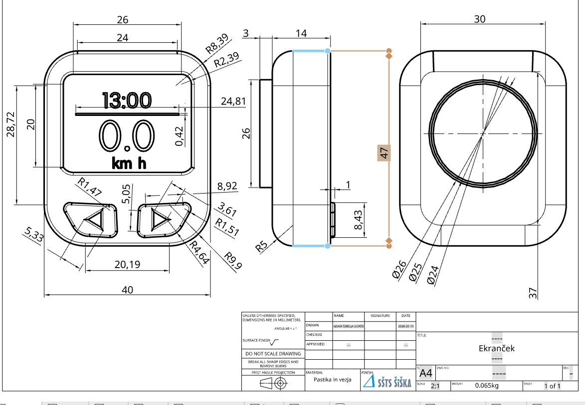
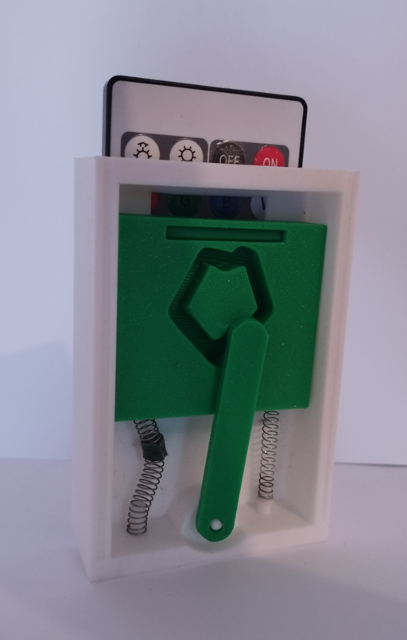
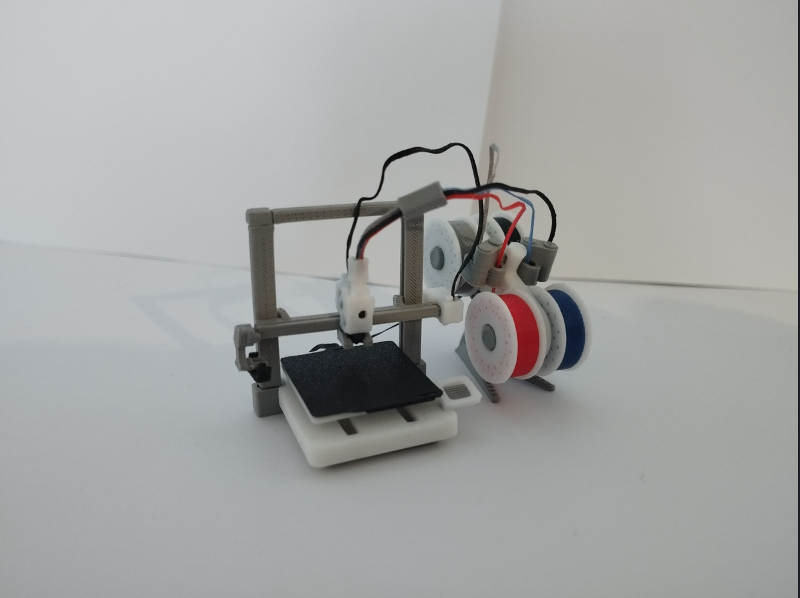
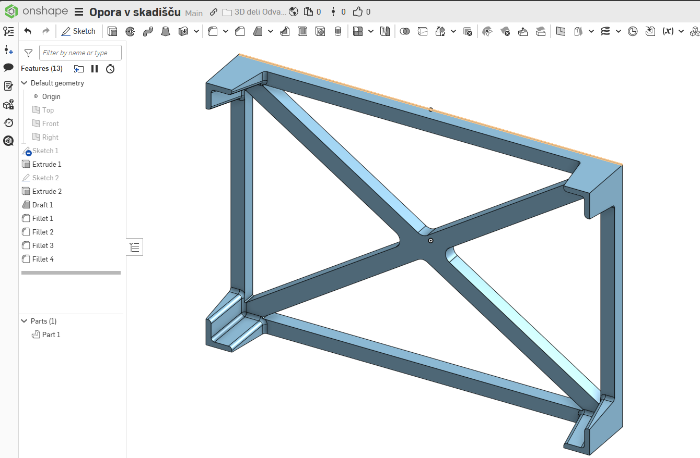
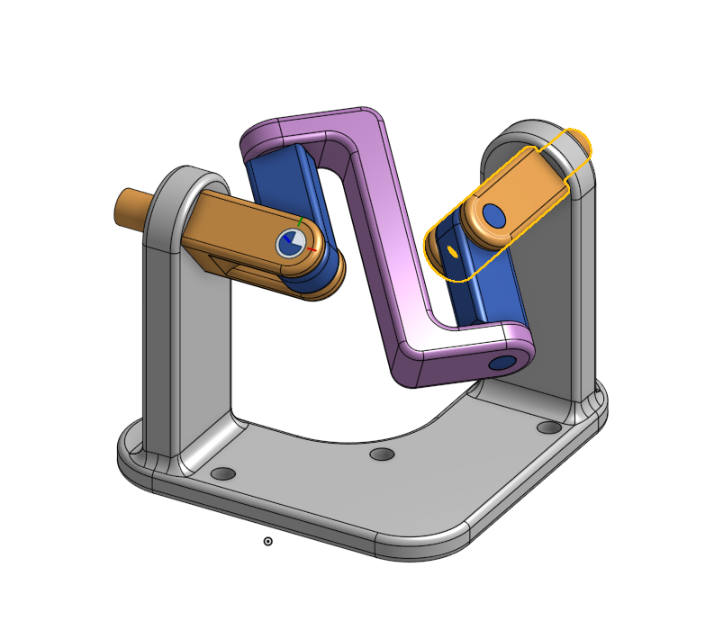
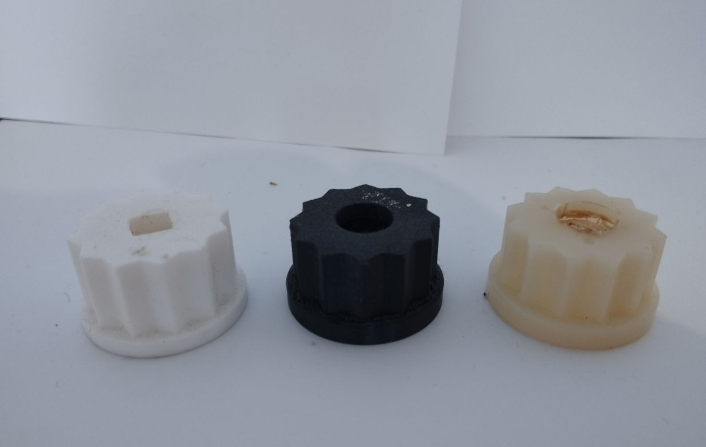
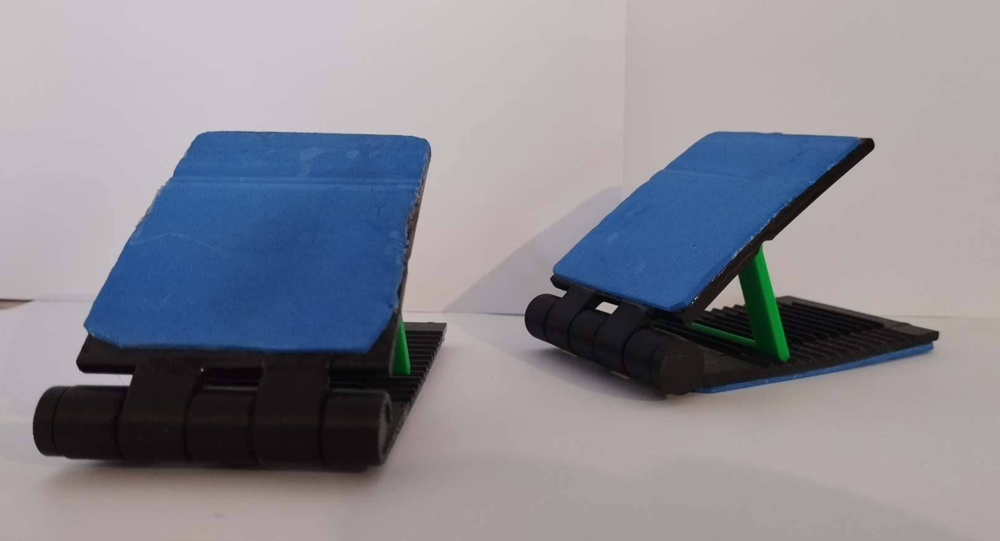
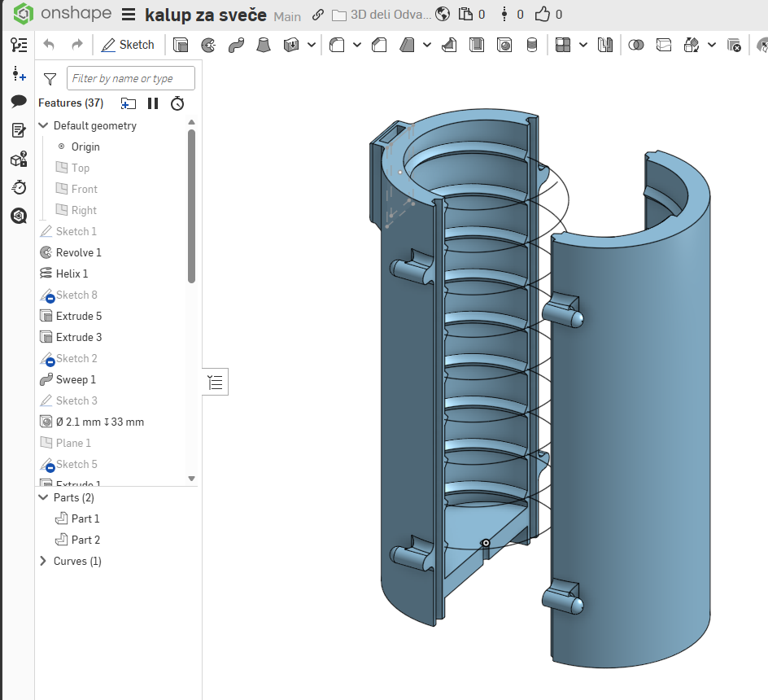

Oglejte si nekaj izdelkov, ki sem jih že natisnil s svojim 3D tiskalnikom. Kliknite na kartico za opis.

Delavniška risba
Delavniška risba
Tehnična dokumentacija in natančen 2D prikaz modela, ki služi kot podlaga za preverjanje mer in natančno 3D tiskanje.
Zapri X

LED daljinec
LED daljinec
To je projekt, s katerim sem se sploh začel učiti in delati na svojih projektih. Učil sem se predvsem iz lastnih napak. Dele sem kupil ločeno, namen modela pa je, da se zaradi vgrajene vzmeti lepo prilega in sprosti roko.
Zapri X

Mini printer
Mini printer
Kompakten projekt sestave miniaturnega tiskalnika, kjer je bil glavni izziv natančnost drobnih mehanskih komponent.
Zapri X

3D ogrodje
3D ogrodje
Trdno zunanje ohišje, oblikovano za zaščito in strukturno stabilnost notranjih elektronskih komponent.
Zapri X

Strojni prenosi
Strojni prenosi
Gre za strojni prenos vrtenja pod kotom 90 stopinj, ki je bil v celoti narisan in načrtovan v programu Onshape.
Zapri X

Prototip
Prototip
Pri tem projektu sem se učil upoštevanja različnih vrst materialov in strojnih toleranc. Končni namen izdelka je priključek za mikser.
Zapri X

Stojalo za računalnik
Stojalo za računalnik
Stojalo za računalnik je narejeno za nastavljiv nagib tipkanja in zagotavljanje boljšega pretoka zraka pod napravo.
Zapri X

Stojalo za sveče
Stojalo za sveče
To je delujoč prototip, s katerim lahko večkrat preprosto narediš model sveče. Narejen je iz močne in toplotno izjemno odporne plastike (PCTG).